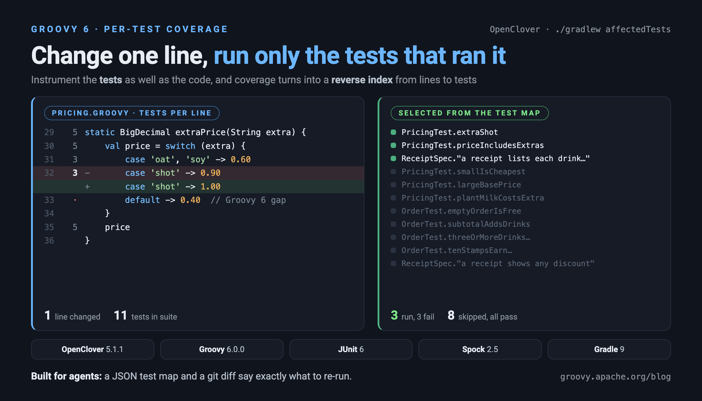
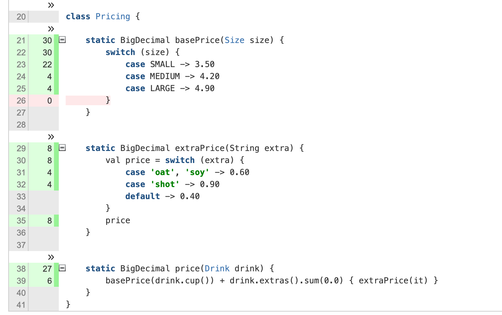

Which tests should I run? Per-test coverage for Groovy 6 with OpenClover

Published: 2026-10-20 08:00AM
Introduction
Most coverage tools answer "which lines did my tests run?". OpenClover can also answer the reverse question: "which tests ran this line?". In this post we check whether OpenClover works with Groovy 6, look at its per-test coverage and test optimization features, and turn its coverage database into a small tool that tells an AI coding agent exactly which tests to re-run after it changes a line.

OpenClover is the open source
continuation of Atlassian’s Clover code coverage tool. Unlike
tools such as JaCoCo, which run as a Java agent (-javaagent) and instrument
bytecode as classes are loaded, OpenClover instruments source, and for Groovy it does
this with an AST transformation hooked into the compiler.
One long-standing Clover feature is easy to overlook: it instruments the tests as well as the code under test. Each test method records when it starts and stops, so every coverage hit can be attributed to the test that caused it. The result is per-test coverage, and once you have it you can invert it: for any line of production code, the exact set of tests that executed it.
That inverted view is useful to humans (OpenClover’s HTML report shows it and it powers Clover’s test optimization feature), but it is arguably even more useful to AI coding agents. An agent that has just changed one line of a large code base faces a choice: run the whole suite (slow), run the tests it guesses are related (risky), or ask a tool that knows. We’ll build that tool.
OpenClover 5.0 added support for Groovy 3 through 5. The current release is 5.1.1. Groovy 6 isn’t listed, so the first question is whether it works anyway.
The example code is in the groovy-openclover companion repo.
The example
We’ll use a small coffee-shop pricing domain. A Drink has a cup size
and some extras; Pricing works out what each costs, Order totals a
list of drinks and applies discounts, and Receipt formats the result.
It uses a few Groovy 6 features along the way: val declarations,
map-style destructuring, and switch expressions.
class Pricing {
static BigDecimal basePrice(Size size) {
switch (size) {
case SMALL -> 3.50
case MEDIUM -> 4.20
case LARGE -> 4.90
}
}
static BigDecimal extraPrice(String extra) {
val price = switch (extra) {
case 'oat', 'soy' -> 0.60
case 'shot' -> 0.90
default -> 0.40
}
price
}
static BigDecimal price(Drink drink) {
basePrice(drink.cup()) + drink.extras().sum(0.0) { extraPrice(it) }
}
}Receipt destructures each record by property name:
class Receipt {
static String render(Order order) {
val lines = order.drinks.collect { drink ->
def (name: n, cup: c, extras: xs) = drink
val label = xs ? "$n (${xs.join(', ')})" : n
"${c.name()[0]} $label".padRight(28) + Pricing.price(drink)
}
val discount = order.discount()
if (discount) {
lines << 'Discount'.padRight(28) + "-$discount"
}
lines << 'Total'.padRight(28) + order.total()
lines.join('\n')
}
}There are 11 tests in total: JUnit 6 tests for Pricing and Order, and a
Spock 2.5 specification for Receipt. That gives us both of the test
frameworks OpenClover hooks into:
class PricingTest {
@Test
void extraShot() {
assert Pricing.extraPrice('shot') == 0.90
}
@Test
void priceIncludesExtras() {
assert Pricing.price(Drink.of('Latte', MEDIUM, 'soy', 'shot')) == 5.70
}
// ...
}
class ReceiptSpec extends Specification {
def "a receipt lists each drink and the total"() {
given:
def order = new Order() << Drink.of('Cappuccino', MEDIUM, 'shot')
expect:
Receipt.render(order) == '''\
M Cappuccino (shot) 5.10
Total 5.10'''.stripIndent()
}
// ...
}Wiring OpenClover into Gradle 9
OpenClover has a Maven plugin, which is maintained alongside the
core. The Gradle plugin (com.bmuschko.clover) was last released in
2024 and fails on Gradle 9 because it uses the removed Convention API:
'java.util.Map org.gradle.api.plugins.Convention.getPlugins()'
That’s less of a problem than it sounds. OpenClover’s own Ant tasks are
small and well-defined, and Gradle can call Ant directly. The companion repo has
a convention plugin, openclover.gradle, of around 130 lines. The heart of it
compiles main and test sources through an instrumenting <groovyc>:
tasks.register('cloverInstrument') {
// ...
doLast {
defineCloverTasks()
ant.taskdef(name: 'groovyc', classname: 'org.codehaus.groovy.ant.Groovyc',
classpath: (configurations.cloverGroovyc + configurations.compileClasspath).asPath)
// Instrumenting the test sources too is what enables per-test coverage
ant.'clover-setup'(initString: cloverDb.get(), tmpDir: "$out/tmp") {
testSources(dir: testSrc) {
include(name: '**/*Test.groovy')
include(name: '**/*Spec.groovy')
}
}
ant.groovyc(srcdir: 'src/main/groovy', destdir: instrMain.get().asFile,
classpath: (configurations.compileClasspath + configurations.clover).asPath)
ant.groovyc(srcdir: testSrc, destdir: instrTest.get().asFile,
classpath: (configurations.testCompileClasspath + configurations.clover + files(instrMain)).asPath)
}
}<clover-setup> registers a listener on the Ant project. When a
<groovyc> task starts, it generates a small jar containing OpenClover’s
global AST transformation and its configuration, and adds it to the
compiler’s classpath. Groovy discovers the transformation through
META-INF/services, and every class it compiles comes out instrumented.
The tests then run with Gradle’s normal Test task, just pointed at the
instrumented classes. OpenClover ships a JUnit Platform
TestExecutionListener (and a Spock global extension), both
discovered automatically, which tell each instrumented test class the
name of the test currently running:
tasks.register('cloverTest', Test) {
testClassesDirs = files(instrTest)
classpath = files(instrTest, instrMain, sourceSets.main.output.resourcesDir,
sourceSets.test.output.resourcesDir, configurations.testRuntimeClasspath, configurations.clover)
doLast {
defineCloverTasks()
ant.'clover-snapshot'(initString: cloverDb.get())
}
}./gradlew cloverReport then produces the usual HTML and XML reports.
Does it work with Groovy 6?
Yes, with one small gap. Everything compiles, every test passes when instrumented, and both JUnit 6 and Spock 2.5 tests have their per-test coverage recorded.
To check more systematically, the companion repo’s compat subproject
has a tour of constructs. Some are familiar from Groovy 4 and 5
(classic and arrow switches, switch expressions with and without
@CompileStatic, ternaries, Elvis, closures, lambdas, method references,
records, traits). Others are new in Groovy 6 (val with rest binding,
map-style destructuring, statement-position arrow switches, async/await).
I compared the per-line results with the same code on Groovy 5.1.3:
| Construct | Groovy 5.1.3 | Groovy 6.0.0 |
|---|---|---|
Classic |
measured |
measured |
Closures, lambdas, method references |
measured |
measured |
Records, traits |
measured |
measured |
Arrow |
measured |
measured |
|
n/a |
measured |
|
n/a |
measured |
|
measured |
measured |
|
measured |
not instrumented |
The gap shows up clearly in the HTML report for Pricing.groovy:

Line 33, the default arm of the extraPrice switch expression, has
no count at all. It isn’t uncovered; OpenClover simply doesn’t know
it’s there. Compare line 26: that red 0 is OpenClover’s synthetic
"no case matched" branch for the statement-position switch in
basePrice. It is correctly reported as never taken, since every Size
is handled.
The cause is a Groovy 6 change. Switch expressions are now first-class AST
nodes (SwitchExpression), visited through a new
GroovyCodeVisitor.visitSwitchExpression default method. Earlier
versions rewrote them into ordinary switch statements, which OpenClover
already handled. OpenClover overrides
visitSwitch to wrap the default branch with a coverage recorder, but has
no counterpart for the new node. The case arms are still reached by the
generic traversal, so only the default arm is missed. The fix is a
few lines in OpenClover, though it needs care since OpenClover still
compiles against Groovy 3–5, where the new method doesn’t exist.
In practice this costs a little accuracy in the statement coverage percentage for code using switch expressions. Nothing else is affected, and as we’ll see, the test-selection tooling copes with it gracefully.
Per-test coverage
Each instrumented test run leaves one coverage "slice" per test next to the database. The HTML report uses them in its Contributing tests section, and clicking a line’s hit count lists the tests that executed it. The data behind that popup is a per-line array of test ids embedded in the report, which shows how central the reverse view is to OpenClover’s design.
The same information is available programmatically. CloverDatabase
loads the coverage database, and getTestHits(range) returns the tests that
executed any method, statement or branch. The companion repo’s
TestMap.groovy uses this to export a portable JSON "test map":
def db = CloverDatabase.loadWithCoverage(dbPath, new CoverageDataSpec())
def tests = [:] // TestCaseInfo -> id
def testId = { TestCaseInfo t -> tests.computeIfAbsent(t) { tests.size() } }
def hits = { CoverageDataRange r -> db.getTestHits(r).collect(testId).sort() }
def files = db.fullModel.getFiles(HasMetricsFilter.ACCEPT_ALL).collectEntries { FileInfo f ->
def regions = f.gatherSourceRegions()
def methods = regions.findAll { it instanceof MethodInfo }.collect { MethodInfo m ->
[m.startLine, m.endLine, m.simpleName, hits(m)]
}
def statements = regions.findAll { it instanceof StatementInfo || it instanceof BranchInfo }.collect {
[it.startLine, it.endLine, hits(it)]
}
// ...
}For extraPrice, the relevant part of build/clover/test-map.json reads:
"methods": [[29, 36, "extraPrice", [0, 4, 5, 6, 10]], ...],
"statements": [[30, 34, [0, 4, 5, 6, 10]],
[31, 31, [4, 6, 10]],
[32, 32, [0, 5, 6]],
[35, 35, [0, 4, 5, 6, 10]], ...]Five tests call extraPrice, but only three of them (ids 0, 5 and 6) ever
price an extra shot.
OpenClover’s test optimization
OpenClover already uses this data. <clover-snapshot> records, for every
test, a checksum of each source file it touched. Later, a
<clover-optimized-testset> re-runs only the test classes whose
recorded files have changed, plus any that failed last time. The companion
repo wraps this as cloverOptimizedTest.
Let’s change one line, raising the price of an extra shot:
- case 'shot' -> 0.90
+ case 'shot' -> 1.00$ ./gradlew cloverOptimizedTest OpenClover selected 3 test class(es): [coffee.PricingTest, coffee.OrderTest, coffee.ReceiptSpec] 11 tests completed, 3 failed
It works, but in this example it saves nothing. Every test class prices
something, so every test class touched Pricing.groovy, and the
optimization works at file granularity. That’s a sensible, conservative
design for a CI server. For an agent making one-line edits in a big
code base, we can do much better.
Line-level test selection
AffectedTests.groovy reads the test map, asks git what has changed
since the commit the map was built from, and resolves each changed hunk
as precisely as the map allows:
def resolve = { Hunk h ->
def entry = map.files[h.file()]
// ... new or unmapped files handled here
// for each changed line, the innermost statement(s) covering it
def statements = h.insertion() ? [] : (h.from()..h.to()).collectMany { line ->
def covering = entry.statements.findAll { it[0] <= line && it[1] >= line }
def span = covering.collect { it[1] - it[0] }.min()
covering.findAll { it[1] - it[0] == span }
}
def signatures = entry.methods.findAll { it[0] in h.from()..h.to() }
if (statements || signatures) {
return [level: 'line', tests: (statements*.last() + signatures*.last()).flatten().unique()]
}
def method = entry.methods.findAll { encloses(it, h) }.min { it[1] - it[0] }
method ? [level: "method ${method[2]}", tests: method.last()] : [level: 'file', tests: entry.tests]
}The fallbacks go from narrow to broad:
-
A changed line containing code maps to the tests that executed its innermost statement. Line 32 sits inside the multi-line
val price = switch …statement, but only the tests that hit line 32 itself are chosen. -
A changed line with no recorded code (a brace, a blank line, an inserted line) maps to the tests of the enclosing method.
-
Anything else in a mapped file maps to every test that touched the file, which is what OpenClover’s own optimizer does.
-
A changed build file, or any file the map doesn’t know, means the whole suite.
-
A new test class is selected so it runs. A new production class is reported as having no coverage yet.
The uninstrumented default arm falls out of this naturally. Line 33
has no statement of its own, so the innermost statement covering it is the
whole switch, and all five callers of extraPrice are selected.
Here it is on the same one-line change:
$ ./gradlew -q :affectedTests src/main/groovy/coffee/Pricing.groovy:32 line 3 test(s) Run: ./gradlew :test --tests 'coffee.ReceiptSpec.a receipt lists each drink and the total' --tests 'coffee.PricingTest.extraShot' --tests 'coffee.PricingTest.priceIncludesExtras'
Running those three tests gives three failures. Running the full suite also gives three failures, the same three. The other eight tests never executed the changed line, and they all pass.
The suggested command runs the ordinary uninstrumented tests, so the fast feedback loop costs no instrumentation overhead. Only rebuilding the map runs instrumented.
Telling the agent
For an agent, -Pjson gives machine-readable output:
{
"baseline": {
"commit": "06b42e72f9308d7b9eb3683dd4844f171d646fdb",
"dirty": false
},
"runAll": false,
"tests": [
"coffee.ReceiptSpec.a receipt lists each drink and the total",
"coffee.PricingTest.extraShot",
"coffee.PricingTest.priceIncludesExtras"
],
"uncovered": [],
"command": "./gradlew :test --tests 'coffee.ReceiptSpec.a receipt lists each drink and the total' --tests 'coffee.PricingTest.extraShot' --tests 'coffee.PricingTest.priceIncludesExtras'",
"hunks": [
{ "location": "src/main/groovy/coffee/Pricing.groovy:32", "level": "line", "tests": 3 }
]
}The uncovered list is arguably as valuable as the test list. If an
agent changes a line that no test executes, it learns that immediately and
can write a test, rather than reporting a green build that never
exercised its change.
The companion repo includes an AGENTS.md with instructions for coding
agents: run affectedTests -Pjson after an edit, run the command,
add tests for anything in uncovered, and run the full suite once
before finishing. That last step matters. Selection is a fast feedback
loop, not a proof. A change can affect a test that never executed the
old line: a new branch that previously didn’t exist, a constant read
elsewhere, or a change in behaviour reached through reflection or
dynamic dispatch. Coverage tells you which tests did run the old code,
not every test that could observe the new code.
The map itself is just a JSON file, so in a larger project a CI job
could build it nightly from the instrumented run and publish it as an
artifact. Agents and developers would then pull it down instead of
paying for instrumentation locally. The map records the commit it describes,
and the selection tool diffs against that commit rather than HEAD, so a map
that is a few commits old still gives correct line numbers.
Does it save tokens?
Fewer test runs means less waiting, but for an agent it should also mean fewer tokens. Without a map, an agent works out which tests matter the same way a person new to the code would: it searches for callers, opens test files, and reasons about which ones look related, and all of that reading goes into its context. In an example as small as our coffee shop the difference would be negligible, so we ran a small pilot on Groovy itself.
We picked the groovy-json module (1,102 tests) and its last 20 GROOVY-tagged
production commits. For each commit, we set the module back to just after
that commit, built a test map, and then reversed the commit’s production
change. That reversal stands in for an edit an agent has just made, and the
module’s full suite tells us which tests it breaks. 15 of the 20 reversals
break at least one test.
Headless Claude Code agents (Sonnet), in workspaces with no git history to peek at, were then given the same prompt for each task: find and run the tests relevant to this change, without running the whole suite. One group had to work the tests out for itself. The other was told about the selection tool. Each group ran every task twice, 40 runs per group:
| Without map | With map | Change | |
|---|---|---|---|
Input tokens |
6.13M |
4.48M |
−27% |
Output tokens |
62k |
38k |
−39% |
Turns |
230 |
172 |
−25% |
Cost |
$4.32 |
$3.49 |
−19% |
Caught every expected failure |
25 of 30 |
30 of 30 |
A few things stood out:
-
The saving comes from fewer turns, not from less test output. Every turn re-reads the whole conversation, so each round of searching and reading that the map makes unnecessary saves tens of thousands of tokens.
-
Accuracy improved more than cost did. Without the map, agents sometimes picked plausible tests that never executed the changed code, ran them, and reported success while a real failure went unnoticed.
-
The output format matters. Our first version of the tool printed every selected test, twice. With hundreds of tests selected, agents had to re-parse the output, and the map group used more tokens than the group without it. Adding a mode that runs the selection directly and reports counts rather than names gave the numbers above.
-
Selection was not much smaller than an agent’s own guesses. A change to parser code that almost every test exercises selects hundreds of tests. What the map adds is that the selection is right.
-
Coverage of a static initializer is credited to whichever test happened to load the class first, so selection for those lines is close to arbitrary.
This is one module, one model, and a fresh map for every task, so treat the numbers as indicative rather than definitive. The direction, though, is consistent: fewer turns, fewer tokens, and no missed failures.
Conclusion
OpenClover 5.1.1 works with Groovy 6 today, despite only claiming
Groovy 3–5. The one gap, the default arm of switch expressions, is
small, well understood, and cosmetic for test selection. Its Gradle plugin
hasn’t kept up with Gradle 9, but driving the Ant tasks directly
takes little code.
The feature that makes it stand out is per-test coverage. Because
OpenClover instruments the tests as well as the code, its database knows
which test executed which line. OpenClover uses that for file-level test
optimization. With a script of under 100 lines on top, it also gives line-level test selection:
exactly the question an AI agent needs answered after every edit.
In a pilot on Groovy’s own groovy-json module, giving agents that answer
cut their token use by about a quarter and stopped them missing failing tests.
Further information
-
OpenClover and its GitHub repository
-
OpenClover documentation, including per-test coverage and test optimization
-
groovy-openclover companion repo